| 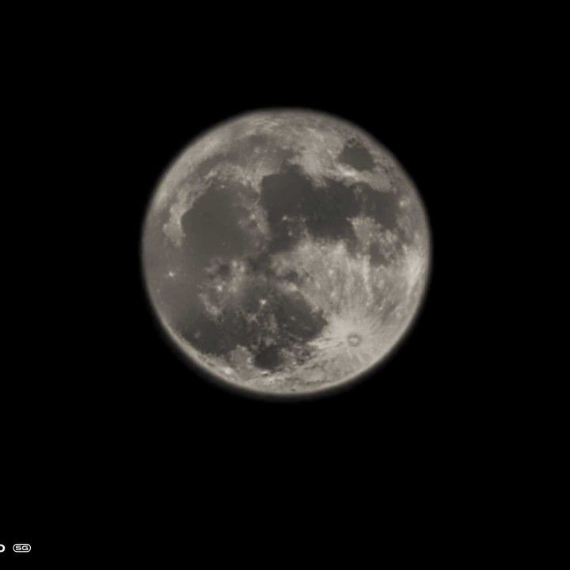 | 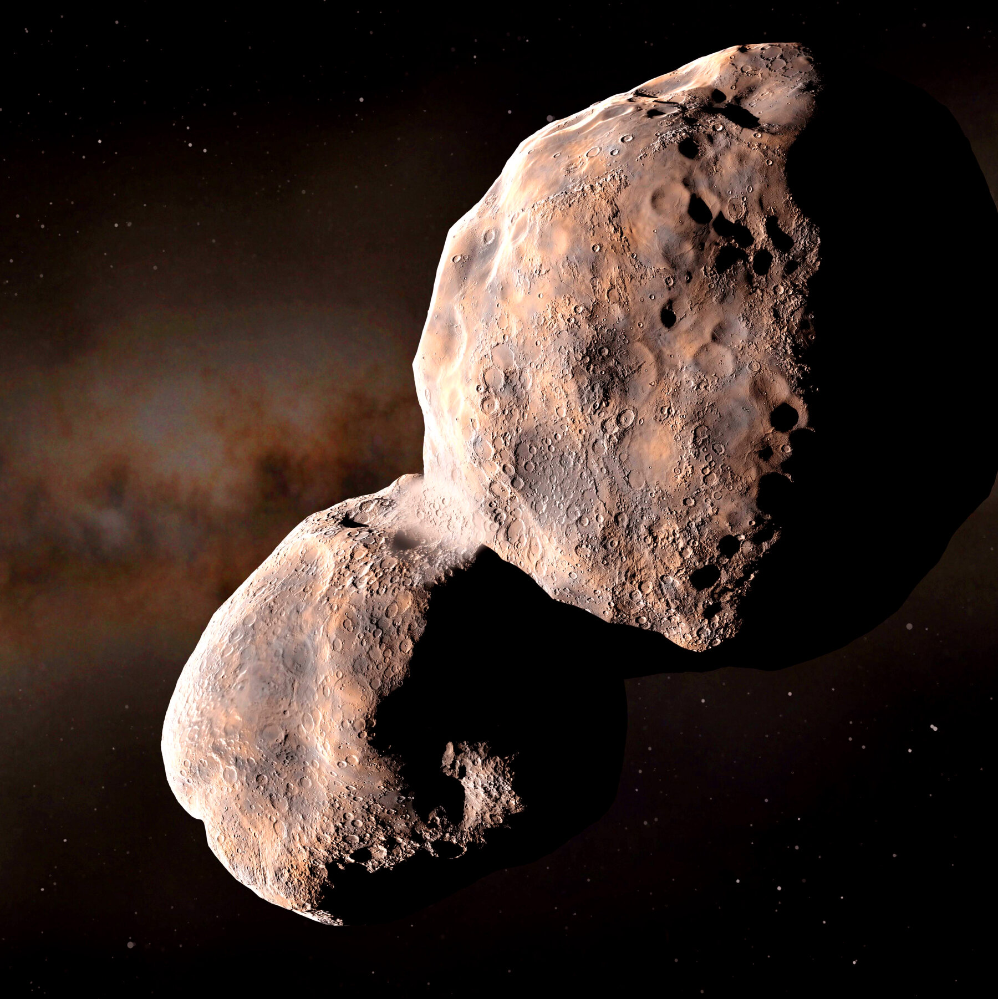 | 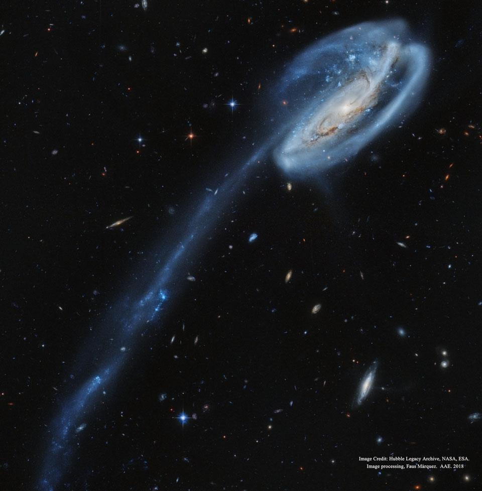 | 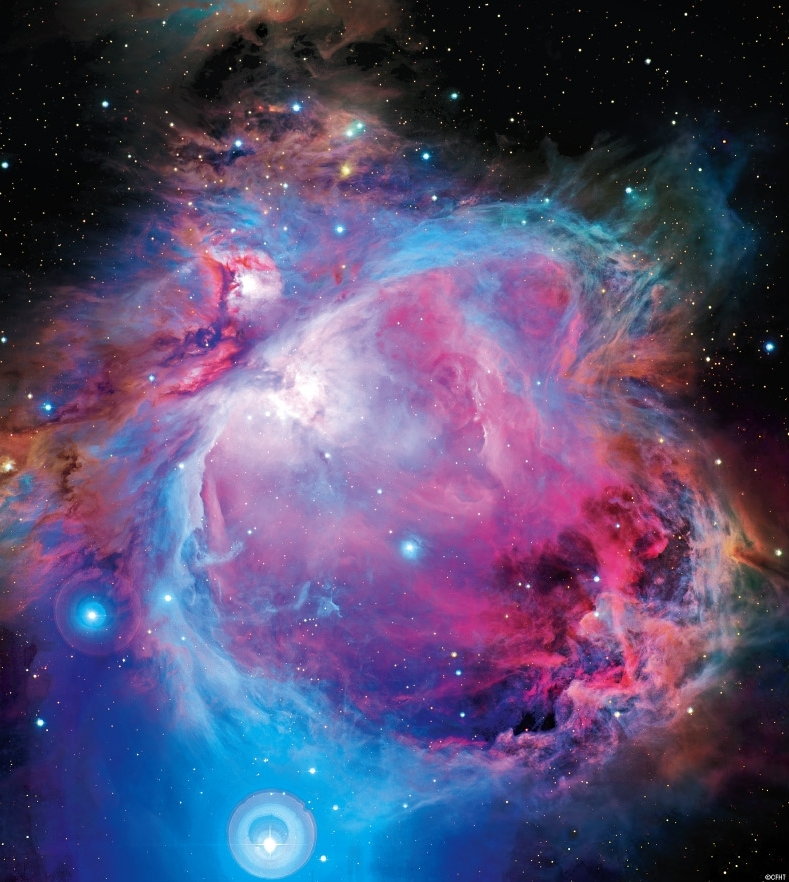 | |
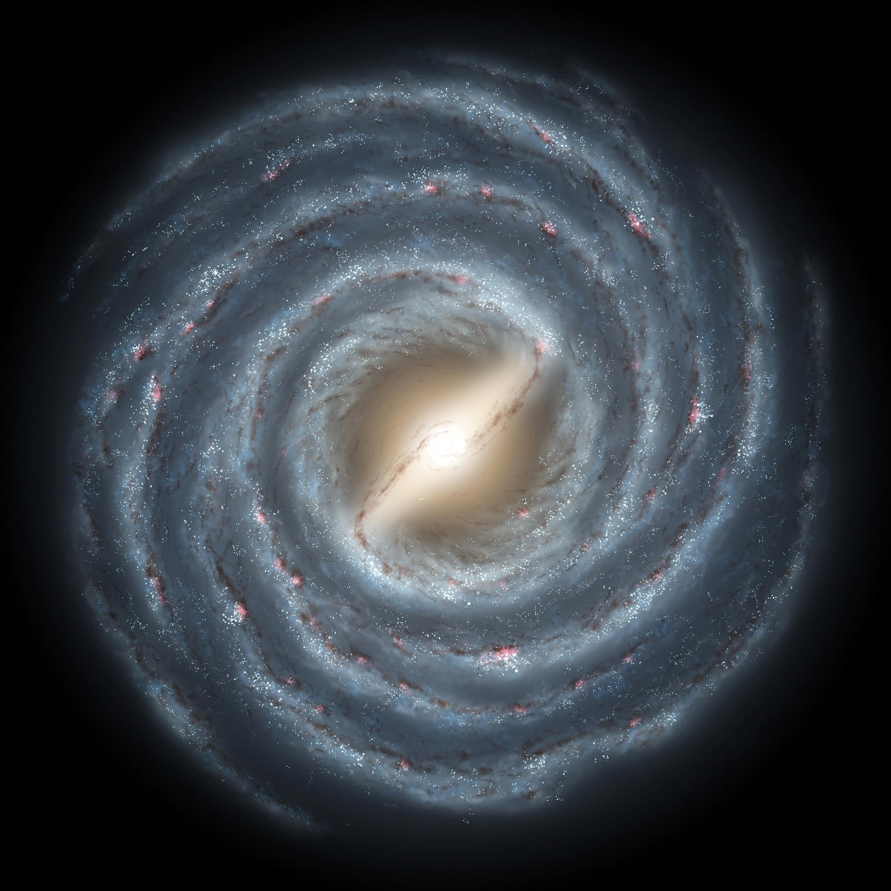 |
Celestial Objects are everything in our universe that is made from matter. Celestial Objects‚ also known as heavenly bodies are things such as planets‚ stars‚ galaxies‚ asteroids‚ star culsters‚ etc. Our home‚ Earth is a celestial object‚ so is the Sun as well as our moon.
Celestial Bodies are classified into 7 different groups:
Planets are large spherical objects that (usually) orbit around a star. Earth is a planet‚ so is Mars‚ Venus‚ Saturn‚ etc. Our solar system is made of 8 different planets.
| Planets in Our Solar System | |
|---|---|
| Mercury |  |
| Venus |  |
| Earth | |
| Mars |  |
| Jupiter | 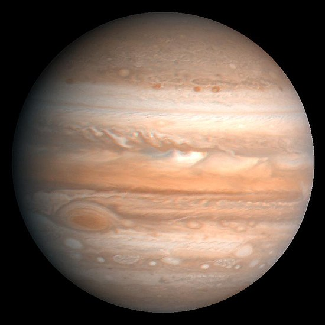 |
| Saturn |  |
| Uranus |  |
| Neptune |  |
Stars are giant balls of hot gas that provide light‚ heat‚ and energy. Our Sun is a star. Most Stars are in solar systems‚ with planets orbiting them. Also‚ the majority of stars are in binary systems meaning that it orbits around a second star‚ its partner.
| 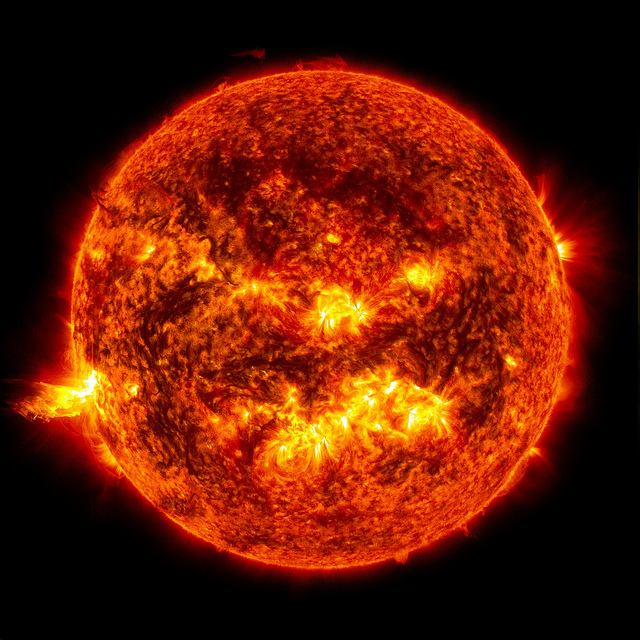 | 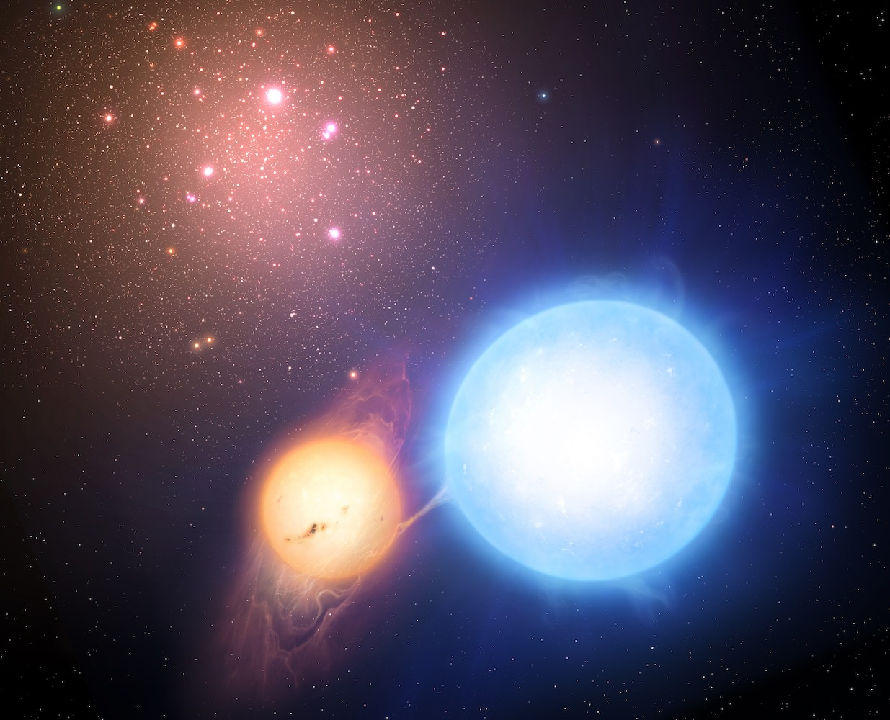 |
Satellites are objects that orbit around a plant‚ they can be natural or man-made. For example‚ our moon is a satellite‚ but so is the ISS (International Space Station)
| 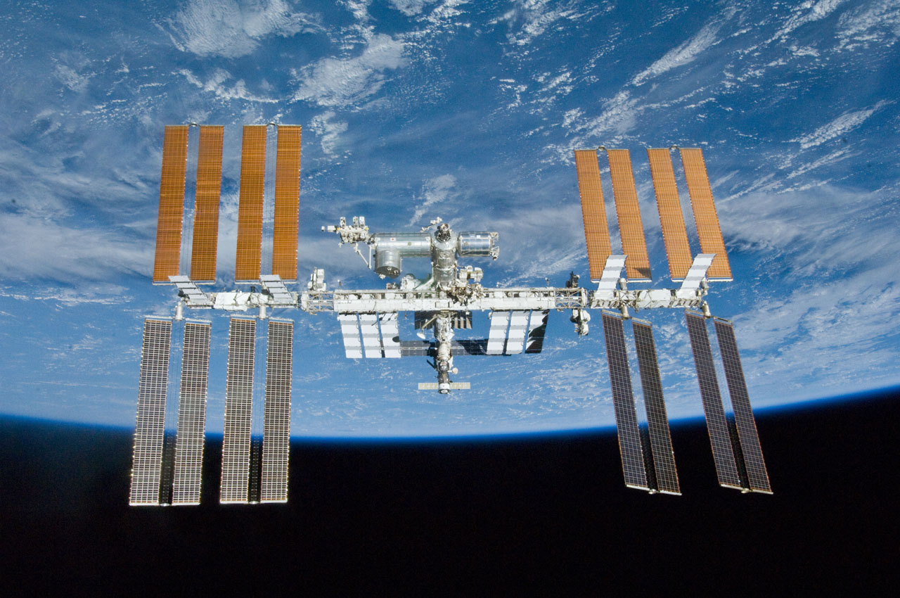 |
Comets are small chunks of rock and ice that come from the outer reaches of the solar system‚ when they get close to the sun they burn up and create a trail behind them.
| 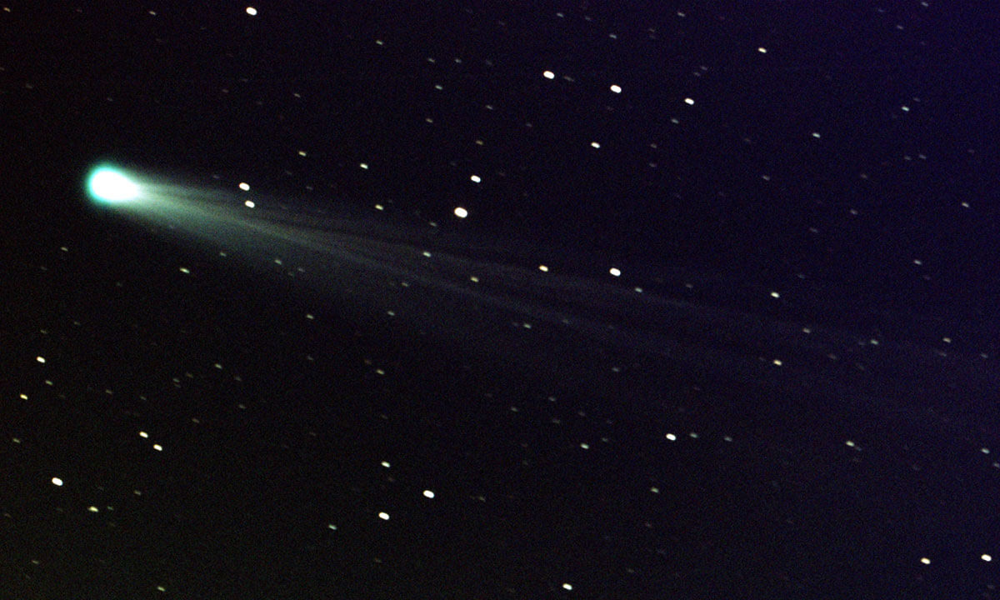 |
Asteroids are big chunks of rock and minerals that orbit the Sun. They usually are in belts‚ The asteroid belt between Mars and Jupiter and the Kuiper belt‚ just outside of Neptune.
| 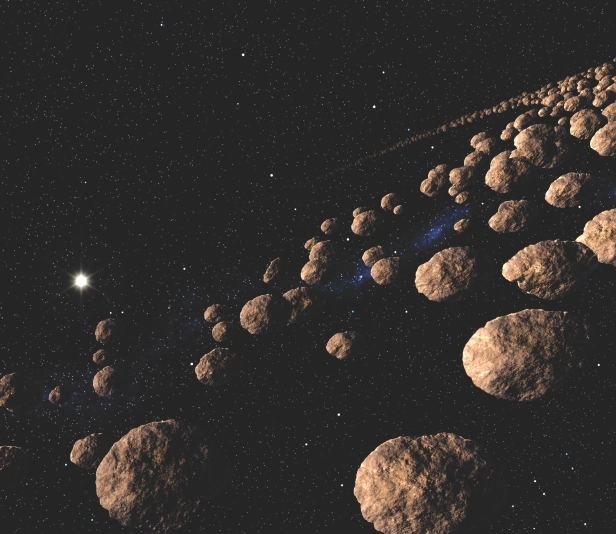 |
Meteors are the "shooting stars" we see. Meteors burn upas they are pulled into the earth by it's gravity. When meteors crash into the Earth, if they are large enough they will create a hole in the ground called a crater. Then, those objects are called meterorites.
| 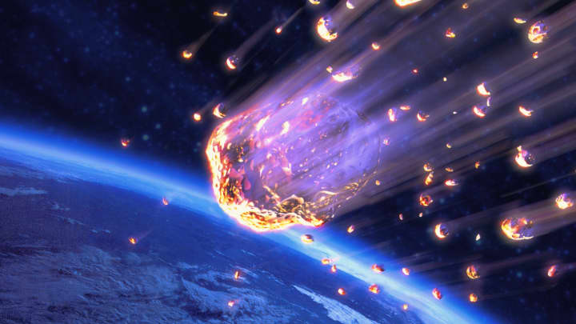 | 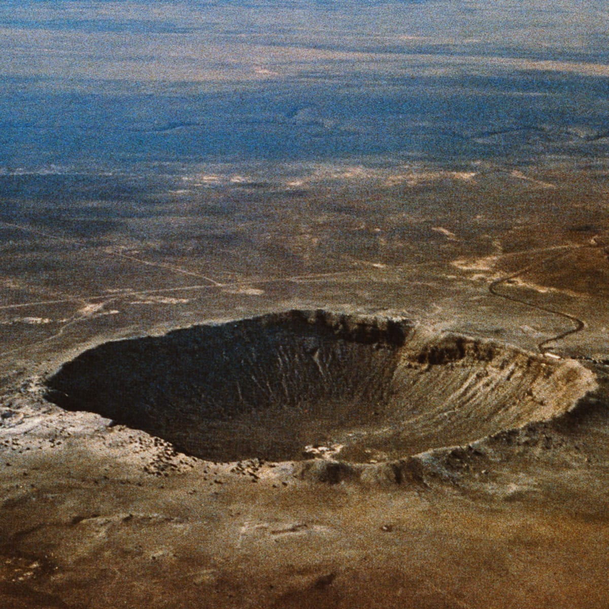 |
Galaxies are very large clouds of dust‚ containing everything that has been mentioned. They are kept together by a supermassive black hole in the center and invisible matter called "dark matter". We are in a galaxy‚ the Milky Way galaxy. there are estimated to be trillions of galaxies in our universe with billions of stars‚ planets‚ satillites‚ asteroids‚ etc.
| 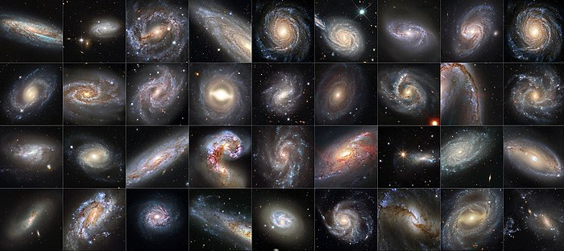 |

 Home
Home